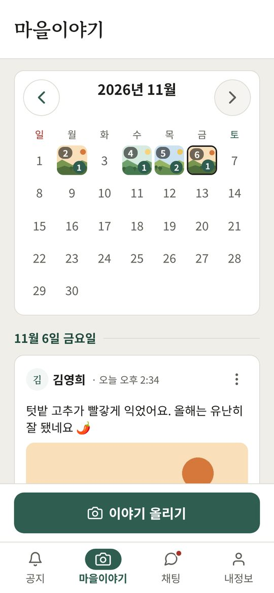
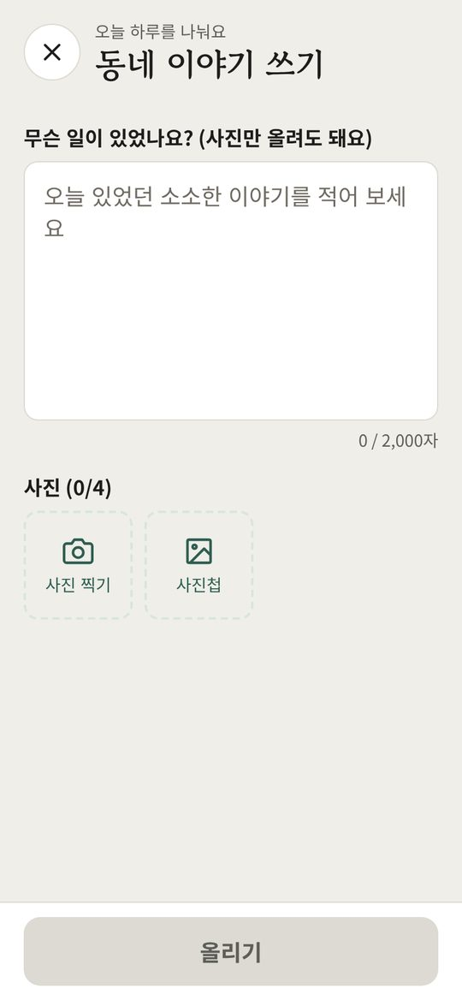
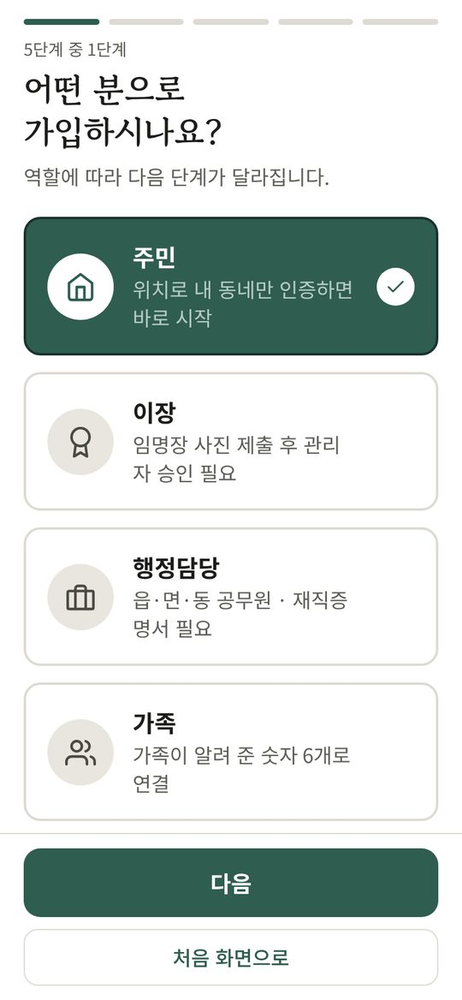
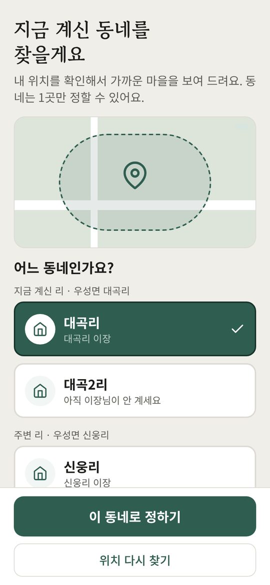
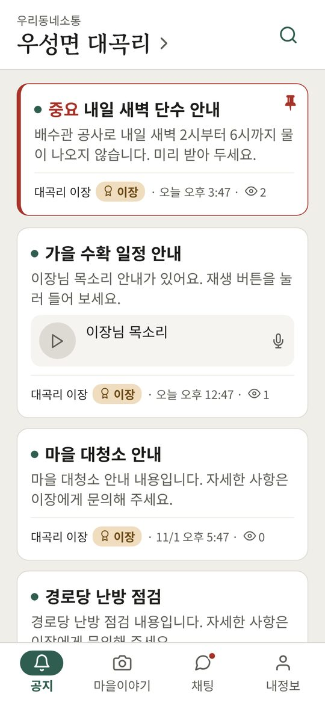
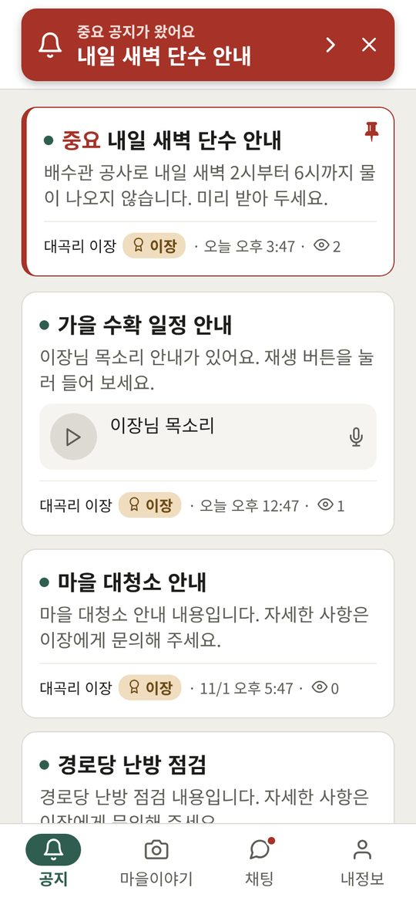
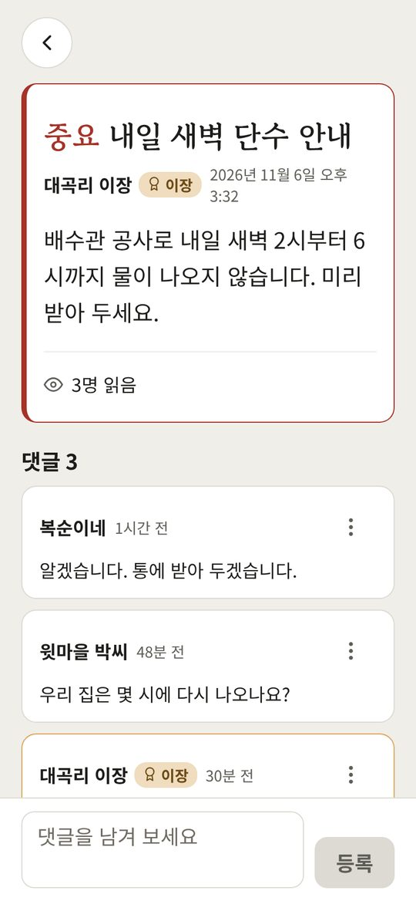
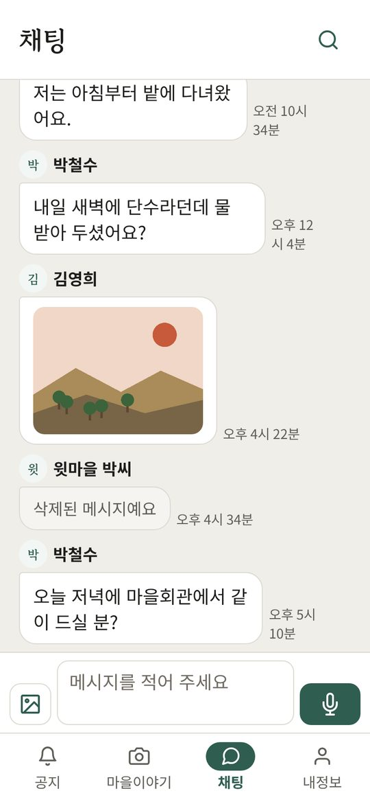
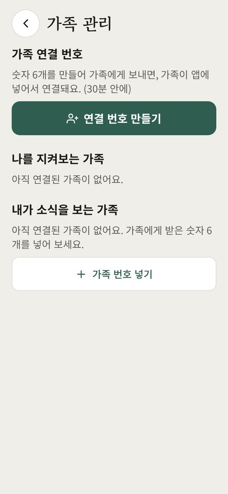
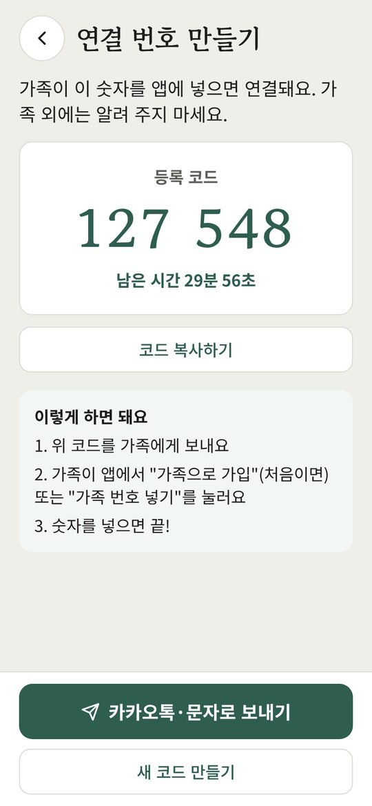

마을이야기
- 아래쪽 마을이야기 탭을 누릅니다.
- 이야기 올리기를 누릅니다.
- 글을 적거나 사진 찍기, 사진첩으로 사진을 넣습니다. (4장까지)
- 올리기를 누릅니다.
달력에서 날짜를 누르면 그날 이야기만 보입니다.




차례 — 누르면 바로 가요





달력에서 날짜를 누르면 그날 이야기만 보입니다.





가족에게 무엇을 보여 줄지는 가족 관리 → 보여 줄 것 정하기에서 정합니다. 허락한 것만 보입니다.
↑ 차례로앱의 내정보 → 고객센터를 누르거나 gaview.cs@gmail.com 으로 보내 주세요.